\gdef\red#1{{\color{cb8680}{#1}}} \gdef\green#1{{\color{4f8d63}{#1}}} \gdef\gray#1{{\color{aaaaaa}{#1}}} \gdef\purple#1{{\color{B189C6}{#1}}} \gdef\orange#1{{\color{dfa04b}{#1}}} \gdef\white#1{{\color{white}{#1}}}
特殊幺正群 SU(N)SU(N)SU(N) 由 N×NN \times NN×N 特殊幺正矩阵构成。
UU†=U†U=1,detU=1UU^\dagger = U^\dagger U = \mathbf{1}, \qquad \det U = 1 UU†=U†U=1,detU=1
定理：全体 SU(N)SU(N)SU(N) 矩阵形成的集合是一个群，群乘法是矩阵乘法
检查乘法封闭性，单位元与逆元都是 SU(N)SU(N)SU(N) 的元素即可
dimSU(N)=N2−1\dim SU(N) = N^2 - 1dimSU(N)=N2−1
说明
N×NN \times NN×N 复矩阵： N2N^2N2 个复矩阵元，2N22N^22N2 个实参数。
幺正条件 UU†=1N×NUU^\dagger = \mathbf{1}_{N \times N}UU†=1N×N 带来一些约束。
由于 UU†U U^\daggerUU† 自动是厄米矩阵，独立的元素只有对角元与上三角元
特殊性条件 detU=1\det U = 1detU=1：
detUU†=∣detU∣2=det1N×N=1\det U U^\dagger = |\det U|^2 = \det \mathbf{1}_{N \times N} = 1 detUU†=∣detU∣2=det1N×N=1
总结：自由参数数量 =2N2−N−(N2−N)/2×2−1=N2−1= 2N^2 - \red{N} - \red{(N^2 - N)/2} \times 2 - \red{1} = N^2 - 1=2N2−N−(N2−N)/2×2−1=N2−1。
有子群关系 SU(N)<SU(M)SU(N) < SU(M)SU(N)<SU(M)，当 1<N<M1< N < M1<N<M
但都 不是 正规子群
SU(N)/SU(N−1)=S2N−1SU(N)/SU(N - 1) = S^{2N - 1} SU(N)/SU(N−1)=S2N−1
说明 利用 Ox=G/Gx\mathcal{O}_x = G/G_xOx=G/Gx。通过考虑 SU(N)SU(N)SU(N) 对 CN\mathbb{C}^NCN 中的 S2N−1S^{2N - 1}S2N−1 的群作用，论证任意点的轨道遍及 S2N−1S^{2N - 1}S2N−1 (从而 Ox=S2N−1\mathcal{O}_x = S^{2N - 1}Ox=S2N−1)，并论证迷向子群 Gx=SU(N−1)G_x = SU(N-1)Gx=SU(N−1) 即可。
推论：SU(N)SU(N)SU(N) 的局部几何有点像 N−1N - 1N−1 个球面的直积
SU(N)∼S2N−1×S2N−3×…×S5×S3SU(N) \sim S^{2N - 1} \times S^{2N - 3} \times \ldots \times S^5 \times S^3 SU(N)∼S2N−1×S2N−3×…×S5×S3
这个结构可以用于书写 Haar 测度
纤维丛 准确来说是形成复杂的主纤维丛结构。
定理：对于任意 U∈SU(N)U \in SU(N)U∈SU(N)，可以通过共轭变换变为一个对角元素，
U→UD=diag(eiφ1,…)=uUu−1,some u∈SU(N)U \to U_D = \operatorname{diag}(e^{i \varphi_1}, \ldots) = u U u^{-1}, \quad \text{some } u \in SU(N) U→UD=diag(eiφ1,…)=uUu−1,some u∈SU(N)
其中 UD∈SU(N)U_D \in SU(N)UD∈SU(N) 要求 φi∈R\varphi_i \in \mathbb{R}φi∈R，以及 ∑i=1Nφi=0\sum_{i = 1}^{N} \varphi_i = 0∑i=1Nφi=0。
SU(2)SU(2)SU(2) 对于 SU(2)SU(2)SU(2)，有 X∈SU(2)X \in SU(2)X∈SU(2)
U(n⃗,ω)=XU(e⃗3,ω)X−1U(\vec n, \omega) = X U(\vec e_3, \omega) X^{-1} U(n,ω)=XU(e3,ω)X−1
推论：共轭类可以由 φ1,…,φN−1,φN=−∑A=1N−1φi\varphi_1, \ldots, \varphi_{N - 1}, \varphi_N = - \sum_{A = 1}^{N - 1} \varphi_iφ1,…,φN−1,φN=−∑A=1N−1φi 标记。
中间的对角矩阵 UDU_DUD 可以写成指数形式，
diag(eiφ1,…,eiφN)=eiHD ,HD=diag(φ1,…,φN)\operatorname{diag}(e^{i \varphi_1}, \ldots, e^{i \varphi_N}) = e^{i H_D} \ , \quad H_D = \operatorname{diag}(\varphi_1, \ldots, \varphi_N)diag(eiφ1,…,eiφN)=eiHD ,HD=diag(φ1,…,φN)
无迹厄密
显然 HDH_DHD 是 N×NN \times NN×N 无迹厄密矩阵：φA∈R\varphi_A \in \mathbb{R}φA∈R，
∑A=1NφA=0 \sum_{A = 1}^{N} \varphi_A = 0 A=1∑NφA=0
定理：对 ∀U∈SU(N)\forall U \in SU(N)∀U∈SU(N)，存在无迹厄密矩阵 HHH，使得
U=eiHU = e^{ i H} U=eiH
U=u−1eiHDu=eiu−1HDuU = u^{-1} e^{i H_D} u = e^{i u^{-1} H_D u} U=u−1eiHDu=eiu−1HDu
定理：对任意无迹厄密矩阵 HHH，
U≔eiHU \coloneqq e^{i H} U:=eiH
是特殊幺正矩阵。
由于 [H,H]=0[H, H] = 0[H,H]=0，可以使用指数乘法规则，
UU†=eiHe−iH†=eiHe−iH=1U U^\dagger = e^{iH} e^{-i H^\dagger} = e^{iH} e^{-i H} = \mathbf{1} UU†=eiHe−iH†=eiHe−iH=1
另外，detU=eitrH=ei0=1\det U = e^{i \operatorname{tr}H} = e^{i 0} = 1detU=eitrH=ei0=1。
李代数
全体 N×NN \times NN×N 无迹厄密矩阵所构成的线性空间形成 SU(N)SU(N)SU(N) 的李代数 su(N)\mathfrak{su}(N)su(N)
直接验证：dimsu(N)=N2−1=dimSU(N)\dim \mathfrak{su}(N) = N^2 - 1 = \dim SU(N)dimsu(N)=N2−1=dimSU(N)
核心特征：对于 H1,H2∈su(N)H_1, H_2 \in \mathfrak{su}(N)H1,H2∈su(N)，对易子 i[H1,H2]i[H_1, H_2]i[H1,H2] 必然也是无迹厄密矩阵，即具有对易子封闭性
基本 (fundamental) 表示 N\mathbf{N}N：即为 SU(N)SU(N)SU(N) 对 CN\mathbb{C}^NCN 的天然线性作用，也即 SU(N)SU(N)SU(N) 的定义本身。因此又称为 defining 表示。
反基本 (anti-fundamental) 表示 N‾\overline{\mathbf{N}}N 为基本表示 N\mathbf{N}N 的复共轭。
基本和反基本表示
N=2N = 2N=2
当 N=2N = 2N=2 时，基本和反基本表示是等价的。
基本表示 2\mathbf{2}2 不可约 ⇒\Rightarrow⇒ 其复共轭 2‾\overline{\mathbf{2}}2 也不可约：222 维不可约表示只有一个等价类 ⇒\Rightarrow⇒ 2≃2‾\mathbf{2} \simeq \overline{\mathbf{2}}2≃2。
具体验证一下。考虑 n⃗=(n1,n2,n3)\vec n = (n_1, n_2, n_3)n=(n1,n2,n3)，U(n⃗,ω)=cosω21+isinω2n⃗⋅σ⃗U(\vec n, \omega) = \cos \frac{\omega}{2}\mathbf{1} + i \sin \frac{\omega}{2} \vec n \cdot \vec \sigmaU(n,ω)=cos2ω1+isin2ωn⋅σ，
U(n⃗,ω)‾=U((−n1,n2,−n3),ω)=σ2U(n⃗,ω)σ2\overline{U(\vec n, \omega)} = U( (- n_1, n_2, - n_3), \omega) = \sigma_2 U(\vec n, \omega) \sigma_2U(n,ω)=U((−n1,n2,−n3),ω)=σ2U(n,ω)σ2
N>2N > 2N>2：基本表示不等价 N≄N‾\mathbf{N} \not \simeq \overline{\mathbf{N}}N≃N。
su(N)={所有无迹厄密矩阵}\mathfrak{su}(N) = \{\small{\text{所有无迹厄密矩阵}}\} su(N)={所有无迹厄密矩阵}
Radj(U)H≔U−1HU ,∀H∈Vadj\mathcal{R}_\text{adj}(U) H \coloneqq U^{-1} H U \ , \qquad \forall H \in V_\text{adj} Radj(U)H:=U−1HU ,∀H∈Vadj
定理：SU(N)SU(N)SU(N) 的任意不可约表示可以用杨图 YYY 标记
要求不超过 NNN 行；向左、向上对齐；Y1≥Y2≥…≥YN≥0Y_1 \ge Y_2 \ge \ldots \ge Y_N \ge 0Y1≥Y2≥…≥YN≥0
优惠规则：满减
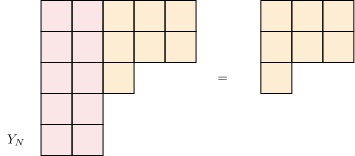
互为复共轭表示 (互补成 NNN 行矩形杨图)
SU(N)SU(N)SU(N) 一维平凡表示 1≔R∅\mathbf{1} \coloneqq \mathcal{R}_{\emptyset}1:=R∅
SU(N)SU(N)SU(N) 基本表示 N≔R□\mathbf{N} \coloneqq \mathcal{R}_{\square}N:=R□
SU(N)SU(N)SU(N) 反基本表示 N‾\overline{\mathbf{N}}N
SU(N)SU(N)SU(N) 伴随表示 adj\mathbf{adj}adj
杨图 YYY 对应的表示维度计算公式
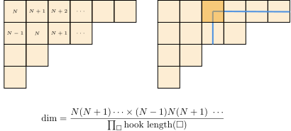
dimRY\dim \mathcal{R}_YdimRY 的通项公式
dimRY=∏1≤A<B≤NN(YA−YB)−(A−B)∏1≤A<B≤NN(B−A)\dim \mathcal{R}_Y = \frac{\prod_{1 \le A < B \le N}^{N} (Y_A - Y_B) - (A - B)}{\prod_{1 \le A < B \le N}^{N} (B - A)} dimRY=∏1≤A<B≤NN(B−A)∏1≤A<B≤NN(YA−YB)−(A−B)
N=2N = 2N=2 对于 N=2N = 2N=2, Y1=nY_1 = nY1=n, Y2=0Y_2 = 0Y2=0，有
RY=Y1−Y2−(1−2)2−1=n+11=n+1\mathcal{R}_Y = \frac{Y_1 - Y_2 - (1 - 2)}{2 - 1} = \frac{n + 1}{1} = n + 1 RY=2−1Y1−Y2−(1−2)=1n+1=n+1
与之前结果相同。
N≥3N\ge 3N≥3 时，存在维度相同但 不等价 的不可约表示
SU(N)SU(N)SU(N) 的 RY\mathcal{R}_YRY 的特征标与 Schur 函数 sYs_YsY，
χRY(UD)=det[eiφA(YB+N−B)]det[eiφA(N−B)]=det[eiφA(YB−B)]det[eiφA(−B)]≔sY(eiφ1.…,eiφN)\chi_{\mathcal{R}_Y}(U_D) = \frac{\det [e^{i \varphi_A (Y_B + N - B)}]}{\det [e^{i \varphi_A (N - B)}]} = \frac{\det [e^{i \varphi_A (Y_B - B)}]}{\det [e^{i \varphi_A ( - B)}]} \coloneqq \green{s_Y(e^{i \varphi_1}. \ldots, e^{i \varphi_N})} χRY(UD)=det[eiφA(N−B)]det[eiφA(YB+N−B)]=det[eiφA(−B)]det[eiφA(YB−B)]:=sY(eiφ1.…,eiφN)
其中 UD∈SU(N)U_D \in SU(N)UD∈SU(N)，φN=−∑A=1N−1φA\varphi_N = - \sum_{A = 1}^{N - 1}\varphi_AφN=−∑A=1N−1φA
Vandermonde 行列式 分母 det[eiφA(N−B)]\det [e^{i \varphi_A (N - B)}]det[eiφA(N−B)] 称为 Vandermonde 行列式，
det[eiφA(N−B)]=∏A,B=1A<BN(eiφA−eiφB)\det [e^{i \varphi_A (N - B)}] = \prod_{\substack{A,B=1 \\ \red{A < B}}}^N(e^{i \varphi_A} - e^{i \varphi_B}) det[eiφA(N−B)]=A,B=1A<B∏N(eiφA−eiφB)
[eiφA(YB+N−B)]=(e3iφ1eiφ11e3iφ2eiφ21e3iφ3eiφ31)\Big[e^{i \varphi_A (Y_B + N - B)} \Big] = \begin{pmatrix} e^{3i \varphi_1} & e^{i \varphi_1} & 1\\ e^{3i \varphi_2} & e^{i \varphi_2} & 1\\ e^{3i \varphi_3} & e^{i \varphi_3} & 1 \end{pmatrix} [eiφA(YB+N−B)]=e3iφ1e3iφ2e3iφ3eiφ1eiφ2eiφ3111
det[eiφA(YB+N−B)]=(∑A=13eiφA)∏A,B=1A<B3(eiφA−eiφB)\det \Big[e^{i \varphi_A (Y_B + N - B)} \Big] = \left({\sum_{A = 1}^{3}e^{i\varphi_A}}\right) \prod_{\substack{A, B = 1 \\ A < B}}^3 (e^{i\varphi_A} - e^{i \varphi_B}) det[eiφA(YB+N−B)]=(A=1∑3eiφA)A,B=1A<B∏3(eiφA−eiφB)
定理: sY(φ→0)=dimRYs_Y(\varphi \to 0) = \dim \mathcal{R}_YsY(φ→0)=dimRY
f(U)=f(UD)=f(φ1,…,φN)f(U) = f(U_D) = f(\varphi_1, \ldots, \varphi_N) f(U)=f(UD)=f(φ1,…,φN)
∫SU(N)[dU]f(U)=1N!∫02π∏A=1N−1dφA2π∏A,B=1A≠BN(eiφA−eiφB)⏟J(φ)f(φ)∣φN=−∑i=1N−1φi\int_{SU(N)} [dU] f(U) = \frac{1}{N!}\int_0^{2\pi} \prod_{A = 1}^{N - 1} \frac{d\varphi_A}{2\pi} \green{\underbrace{\prod_{\substack{A, B = 1 \\ A \ne B}}^{N}(e^{i \varphi_A} - e^{i \varphi_B})}_{J(\varphi)}} f(\varphi)\Big|_{\varphi_N = - \sum_{i = 1}^{N - 1}\varphi_i} ∫SU(N)[dU]f(U)=N!1∫02πA=1∏N−12πdφAJ(φ)A,B=1A=B∏N(eiφA−eiφB)f(φ)φN=−∑i=1N−1φi
N=2N = 2N=2 当 N=2N = 2N=2，Haar 积分为 (−1-1−1 来自 J(φ)J(\varphi)J(φ))
= −12∫02πdφ12π(eiφ1−e−iφ1)2f(φ)=−∫02πdφ14π(2i)2sin2φ1f(φ)= 1π∫02πdφ1sin2φ1f((eiφ1e−iφ1))(ω2=φ1)= 1π∫04π12dωsin2ω2f(U(e⃗3,ω))=1π∫02πdωsin2ω2f(U(e⃗3,ω))\begin{align*} = & \ - \frac{1}{2} \int_0^{2\pi} \frac{d\varphi_1}{2\pi} (e^{i \varphi_1} - e^{- i \varphi_1})^2 f(\varphi) = - \int_0^{2\pi} \frac{d\varphi_1}{4\pi} (2i)^2 \sin^2 \varphi_1 f(\varphi) \\ = & \ \frac{1}{\pi} \int_0^{2\pi} d\varphi_1 \sin^2 \varphi_1 f\left(\begin{pmatrix} e^{i \varphi_1} \\ & e^{- i \varphi_1} \end{pmatrix}\right) \\ \gray{(\frac{\omega}{2} = \varphi_1)} = & \ \frac{1}{\pi} \int_0^{4\pi} \frac{1}{2}d\omega \sin^2 \frac{\omega}{2} f\left(U(\vec e_3, \omega)\right) \\ = & \frac{1}{\pi} \int_0^{2\pi} d\omega \sin^2 \frac{\omega}{2} f(U(\vec e_3, \omega)) \end{align*} ==(2ω=φ1)== −21∫02π2πdφ1(eiφ1−e−iφ1)2f(φ)=−∫02π4πdφ1(2i)2sin2φ1f(φ) π1∫02πdφ1sin2φ1f((eiφ1e−iφ1)) π1∫04π21dωsin22ωf(U(e3,ω))π1∫02πdωsin22ωf(U(e3,ω))
Vandermonde 行列式的平方 Verdemonde 行列式的平方得到 Haar 积分中的雅可比行列式 J(φ)J(\varphi)J(φ)，
det[eiφA(N−B)]2=(−1)CN2J(φ)=(−1)CN2∏1≤A,B≤NA≠B(eiφA−eiφB)\det [e^{i \varphi_A (N - B)}]^2 = (-1)^{C_N^2} J(\varphi) = (-1)^{C_N^2} \prod_{\substack{1 \le A, B \le N \\ A\ne B}}(e^{i\varphi_A} - e^{i \varphi_B}) det[eiφA(N−B)]2=(−1)CN2J(φ)=(−1)CN21≤A,B≤NA=B∏(eiφA−eiφB)
1N!∫∏A−1N−1dφA2πJ(φ)sY(φ)sY′(φ)‾=δYY′\frac{1}{N!}\int \prod_{A - 1}^{N-1}\frac{d\varphi_A}{2\pi}J(\varphi) s_Y(\varphi) \overline{s_{Y'} (\varphi)} = \delta_{Y Y'}N!1∫A−1∏N−12πdφAJ(φ)sY(φ)sY′(φ)=δYY′
sY1sY2=∑YNY1,Y2YsYs_{Y_1} s_{Y_2} = \sum_{Y} \green{N_{Y_1, Y_2}{^Y}} s_Y sY1sY2=Y∑NY1,Y2YsY
NY1,Y2Y≔1N!∫∏A=1N−1dφA2πJ(φ)sY1(φ)sY1(φ)sY(φ)‾\green{N_{Y_1, Y_2}{^Y} \coloneqq \frac{1}{N!}\int \prod_{A = 1}^{N-1}\frac{d\varphi_A}{2\pi}J(\varphi) s_{Y_1}(\varphi)s_{Y_1}(\varphi) \overline{s_Y(\varphi)}} NY1,Y2Y:=N!1∫A=1∏N−12πdφAJ(φ)sY1(φ)sY1(φ)sY(φ)
RY⊗RY′=⊕Y~NYY′Y~RY~\mathcal{R}_Y \otimes \mathcal{R}_{Y'} = \oplus_{\tilde Y} N_{YY'}{^{\tilde Y}} \mathcal{R}_{\tilde Y} RY⊗RY′=⊕Y~NYY′Y~RY~
NYY′Y~=∫[dU]χRY(U)χRY(U)χRY~(U)‾N_{YY'}{^{\tilde Y}} = \int [dU]\chi_{\mathcal{R}_Y}(U) \chi_{\mathcal{R}_Y}(U)\overline{\chi_{\mathcal{R}_{\tilde Y}}(U)}NYY′Y~=∫[dU]χRY(U)χRY(U)χRY~(U)
例：SU(3)SU(3)SU(3) 的 3⊗3‾\mathbf{3} \otimes \overline{\mathbf{3}}3⊗3
例：把第 1 行和第 2 行先后移动
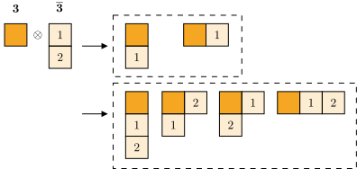
读图，排除违规的图
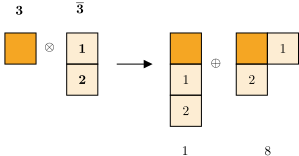
例：SU(3)SU(3)SU(3) 伴随表示 ⊗\otimes⊗ 伴随表示
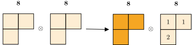
例：移动第一行，得到四个图
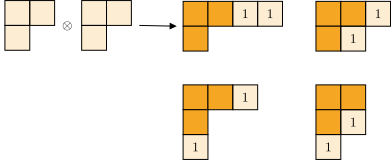
例：第一个图加上第二行盒子
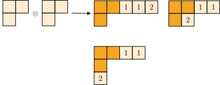
例：第二个图加上第二行盒子
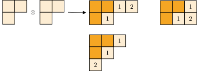
例：第三个图和第四个图加上第二行盒子
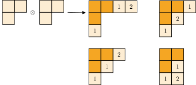
例：读图，所有合规的图
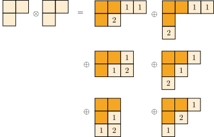
例：算出表示维度
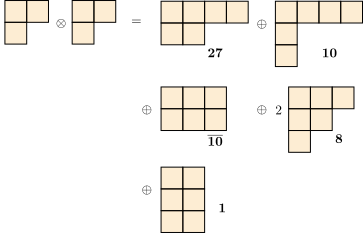
uU=Uu ,∀U∈SU(N) .u U = U u \ , \qquad \forall U \in SU(N) \ . uU=Uu ,∀U∈SU(N) .
u=λ1N×N .u = \lambda \mathbf{1}_{N \times N}\ . u=λ1N×N .
λ=e2πikN ,k=0,1,…,N−1 .\lambda = e^{\frac{2\pi i k}{N}} \ , \qquad k = 0, 1, \ldots, N - 1 \ . λ=eN2πik ,k=0,1,…,N−1 .
C(SU(N))={e2πikN1N×N ∣ k=0,1,…,N−1}=ZN .C(SU(N)) = \{e^{\frac{2\pi i k}{N}} \mathbf{1}_{N \times N} \ | \ k = 0, 1, \ldots, N - 1 \} = \mathbb{Z}_N \ . C(SU(N))={eN2πik1N×N ∣ k=0,1,…,N−1}=ZN .
O(N)≔{O ∣ OTO=1N×N} .O(N) \coloneqq \{O \ | \ O^TO = \mathbf{1}_{N \times N}\} \ . O(N):={O ∣ OTO=1N×N} .
detOTO=det1N×N=1⇒detO=±1 .\det O^T O = \det \mathbf{1}_{N \times N} = 1 \Rightarrow \det O = \pm 1 \ . detOTO=det1N×N=1⇒detO=±1 .
O=(abcd)O = \begin{pmatrix} a & b \\ c & d \end{pmatrix}O=(acbd)
a2+b2=1,c2+d2=1,ac+bd=0 .a^2 + b^2 = 1, \qquad c^2 + d^2 = 1, \qquad ac + bd = 0 \ . a2+b2=1,c2+d2=1,ac+bd=0 .
ccosφ+dsinφ=0⇒c=−λsinφ,d=λcosφ .c \cos \varphi + d \sin \varphi = 0 \\ \Rightarrow c = - \lambda \sin \varphi, \qquad d = \lambda \cos\varphi \ .ccosφ+dsinφ=0⇒c=−λsinφ,d=λcosφ .
O(2)={(cosφsinφ−sinφcosφ)⏟顺时针转动 φ 角}∪{(cosφsinφsinφ−cosφ)⏟πφ} .O(2) = \Bigg\{ \underbrace{\begin{pmatrix} \cos \varphi & \sin \varphi \\ - \sin \varphi & \cos \varphi \end{pmatrix}}_\text{顺时针转动 $\varphi$ 角} \Bigg\} \cup \Bigg\{ \underbrace{\begin{pmatrix} \cos \varphi & \sin \varphi \\ \sin \varphi & - \cos \varphi \end{pmatrix}}_{\pi_\varphi} \Bigg\} \ .O(2)={顺时针转动 φ 角(cosφ−sinφsinφcosφ)}∪{πφ(cosφsinφsinφ−cosφ)} .
π0(xy)=(cosφsinφsinφ−cosφ)∣φ=0(xy)=(x−y)\pi_0 \begin{pmatrix} x \\ y \end{pmatrix} = \begin{pmatrix} \cos \varphi & \sin \varphi \\ \sin \varphi & - \cos \varphi \end{pmatrix}\Bigg|_{\varphi = 0} \begin{pmatrix} x \\ y \end{pmatrix} = \begin{pmatrix} x \\ - y \end{pmatrix}π0(xy)=(cosφsinφsinφ−cosφ)φ=0(xy)=(x−y)
注：展示 xxx-轴反射的几何图示，显示点 AAA、BBB、CCC 在反射操作下的变换关系
注：展示旋转操作 RφR_\varphiRφ 的几何图示，显示点的旋转变换
π0(B)=A,π0(A)=B,π0(C)=C,Rφ(C)=A,Rφ(B)=C .\pi_0(B) = A, \quad \pi_0(A) = B, \quad \pi_0(C) = C, \\ R_\varphi(C) = A, \quad R_\varphi(B) = C \ .π0(B)=A,π0(A)=B,π0(C)=C,Rφ(C)=A,Rφ(B)=C .
π0(Rφ(B))=C,π0(Rφ(C))=B .\pi_0(R_\varphi(B)) = C, \qquad \pi_0(R_\varphi(C)) = B \ .π0(Rφ(B))=C,π0(Rφ(C))=B .
注：展示复合操作 π0Rφ\pi_0 R_\varphiπ0Rφ 的几何效果，实际是以倾角 φ/2\varphi/2φ/2 的轴作反射
π0Rφ=(100−1)(cosφsinφ−sinφcosφ)=(cosφsinφsinφ−cosφ)\pi_0 R_\varphi = \begin{pmatrix} 1 & 0 \\ 0 & -1 \end{pmatrix} \begin{pmatrix} \cos \varphi & \sin \varphi\\ - \sin \varphi & \cos \varphi \end{pmatrix} = \begin{pmatrix} \cos \varphi & \sin \varphi\\ \sin \varphi & - \cos \varphi \end{pmatrix}π0Rφ=(100−1)(cosφ−sinφsinφcosφ)=(cosφsinφsinφ−cosφ)
πφ1Rφ2=πφ1+φ2,Rφ2πφ1=πφ1−φ2πφ1πφ2=Rφ2−φ1,Rφ1Rφ2=Rφ1+φ2πφ2=R0=1 .\pi_{\varphi_1} R_{\varphi_2} = \pi_{\varphi_1 + \varphi_2}, \qquad R_{\varphi_2}\pi_{\varphi_1} = \pi_{\varphi_1 - \varphi_2} \\ \pi_{\varphi_1} \pi_{\varphi_2} = R_{\varphi_2 - \varphi_1}, \qquad R_{\varphi_1} R_{\varphi_2} = R_{\varphi_1 + \varphi_2} \\ \pi_\varphi^2 = R_0 = \mathbf{1} \ .πφ1Rφ2=πφ1+φ2,Rφ2πφ1=πφ1−φ2πφ1πφ2=Rφ2−φ1,Rφ1Rφ2=Rφ1+φ2πφ2=R0=1 .
SO(2)SO(2)SO(2)：在 SO(2)SO(2)SO(2) 中，每一个转动 RφR_\varphiRφ 自成共轭类，因为 SO(2)SO(2)SO(2) 是阿贝尔群。
直接计算
Rφ1πφ2R−φ1=π2φ2−φ1 ,πφ1πφ2πφ1=π−φ2 .R_{\varphi_1} \pi_{\varphi_2} R_{-\varphi_1} = \pi_{2\varphi_2 - \varphi_1} \ , \qquad \pi_{\varphi_1} \pi_{\varphi_2} \pi_{\varphi_1} = \pi_{- \varphi_2}\ .Rφ1πφ2R−φ1=π2φ2−φ1 ,πφ1πφ2πφ1=π−φ2 .
因此所有反射 {πφ}\{\pi_\varphi\}{πφ} 形成一个 共轭类。
SO(2)={Rφ}≤O(2) .SO(2) = \{R_\varphi\} \le O(2) \ . SO(2)={Rφ}≤O(2) .
O(2)=SO(2)∪π0SO(2) .O(2) = SO(2) \cup \pi_0 SO(2) \ . O(2)=SO(2)∪π0SO(2) .
陪集：对任意 φ\varphiφ，有 πφSO(2)=π0SO(2)\pi_\varphi SO(2) = \pi_0 SO(2)πφSO(2)=π0SO(2)。
注：两个圆形分支分别表示 SO(2)SO(2)SO(2) 和 π0SO(2)\pi_0 SO(2)π0SO(2)
不存在一条 O(2)O(2)O(2) 中的路径从 SO(2)SO(2)SO(2) 连接到 π0SO(2)\pi_0 SO(2)π0SO(2)。
O(N)O(N)O(N) 中包含镜面反射 w.r.t. 某个 N−1N - 1N−1-维超平面，如
πi≔diag(1,…,1,−1,1,…,1) .\pi_i \coloneqq \operatorname{diag}(1, \ldots, 1, -1, 1, \ldots, 1) \ . πi:=diag(1,…,1,−1,1,…,1) .
是以 {xi=0}\{x_i = 0\}{xi=0} 为反射面的 反射。
以任意 N−1N - 1N−1-维超平面为镜面也有相应的反射 π∈O(N)\pi\in O(N)π∈O(N)，镜面本身是 π\piπ 的 不动点。
{1N×N,π}=Z2≤O(N)\{\mathbf{1}_{N \times N}, \pi\} = \mathbb{Z}_2 \le O(N){1N×N,π}=Z2≤O(N)：有无穷多个 Z2\mathbb{Z}_2Z2 子群
反射：人们通常认为反射操作 π\piπ 应该具有特征 π2=1\pi^2 = \mathbf{1}π2=1
O(N)O(N)O(N) 也有两个连通分支，
O(N)={O ∣OTO=1N×N,detO=1}∪{O ∣OTO=1N×N,detO=−1} .O(N) = \{O \ | O^TO = \mathbf{1}_{N \times N}, \det O = 1\} \\ \cup \{O \ | O^TO = \mathbf{1}_{N \times N}, \det O = - 1\} \ .O(N)={O ∣OTO=1N×N,detO=1}∪{O ∣OTO=1N×N,detO=−1} .
记
SO(N)≔{O ∣OTO=1N×N,detO=1} ,π1SO(N)≔{O ∣OTO=1N×N,detO=−1} .SO(N) \coloneqq \{O \ | O^TO = \mathbf{1}_{N \times N}, \det O = 1\} \ , \\ \pi_1SO(N) \coloneqq \{O \ | O^TO = \mathbf{1}_{N \times N}, \det O = - 1\} \ .SO(N):={O ∣OTO=1N×N,detO=1} ,π1SO(N):={O ∣OTO=1N×N,detO=−1} .
说明：直接计算行列式即可：detO=−1\det O = -1detO=−1，detπ1=−1\det \pi_1 = -1detπ1=−1，因此 detπ1O=+1,⇒π1O=R∈SO(N) .\det \pi_1 O = + 1, \qquad \Rightarrow \qquad \pi_1 O = R \in SO(N) \ . detπ1O=+1,⇒π1O=R∈SO(N) .
说明：直接计算行列式即可：detO=−1\det O = -1detO=−1，detπ1=−1\det \pi_1 = -1detπ1=−1，因此
detπ1O=+1,⇒π1O=R∈SO(N) .\det \pi_1 O = + 1, \qquad \Rightarrow \qquad \pi_1 O = R \in SO(N) \ . detπ1O=+1,⇒π1O=R∈SO(N) .
旋转反射：π1\pi_1π1 与 RRR 的复合通常称为 旋转反射。因此 π1SO(N)\pi_1SO(N)π1SO(N) 中的元素为全体旋转反射。但里面大多数元素并不满足 π2=1\pi^2 = \mathbf{1}π2=1：旋转反射 并不一定 是 反射。
说明：利用行列式，直接验证 πSO(N)π⊂SO(N)\pi SO(N) \pi \subset SO(N)πSO(N)π⊂SO(N) 即可。
O(N)=SO(N)⋊Z2 .O(N) = SO(N) \rtimes \mathbb{Z}_2 \ . O(N)=SO(N)⋊Z2 .
说明：只要建立起 同态双射 即可。这个同态双射选为 合并映射 ϕ:Z2×SO(N)→O(N)\phi: \mathbb{Z}_2 \times SO(N) \to O(N)ϕ:Z2×SO(N)→O(N) ϕ(s,R)≔sR∈O(N) .\phi(s, R) \coloneqq sR \in O(N)\ . ϕ(s,R):=sR∈O(N) .要说明它是同态，只需要验证 ϕ((s1,R1)(s2,R2)⏟(s1s2,R1R2))=ϕ(s1,R1)ϕ(s2,R2)⏟s1R1s2R2=s1s2R1R2 .\phi( \underbrace{(s_1, R_1)(s_2, R_2)}_{(s_1 s_2, R_1 R_2)} ) = \underbrace{\phi(s_1, R_1) \phi(s_2, R_2)}_{s_1 R_1 s_2 R_2 = s_1 s_2 R_1 R_2} \ . ϕ((s1s2,R1R2)(s1,R1)(s2,R2))=s1R1s2R2=s1s2R1R2ϕ(s1,R1)ϕ(s2,R2) .
说明：只要建立起 同态双射 即可。这个同态双射选为 合并映射 ϕ:Z2×SO(N)→O(N)\phi: \mathbb{Z}_2 \times SO(N) \to O(N)ϕ:Z2×SO(N)→O(N)
ϕ(s,R)≔sR∈O(N) .\phi(s, R) \coloneqq sR \in O(N)\ . ϕ(s,R):=sR∈O(N) .
要说明它是同态，只需要验证
ϕ((s1,R1)(s2,R2)⏟(s1s2,R1R2))=ϕ(s1,R1)ϕ(s2,R2)⏟s1R1s2R2=s1s2R1R2 .\phi( \underbrace{(s_1, R_1)(s_2, R_2)}_{(s_1 s_2, R_1 R_2)} ) = \underbrace{\phi(s_1, R_1) \phi(s_2, R_2)}_{s_1 R_1 s_2 R_2 = s_1 s_2 R_1 R_2} \ . ϕ((s1s2,R1R2)(s1,R1)(s2,R2))=s1R1s2R2=s1s2R1R2ϕ(s1,R1)ϕ(s2,R2) .
说明：要说明它是双射，只要找到 逆映射 即可。逆即为 拆分映射 ϕ~:O(N)→Z2×SO(N)\tilde \phi: O(N) \to \mathbb{Z}_2 \times SO(N)ϕ~:O(N)→Z2×SO(N)， ϕ~(O)=(detO,1detOO)∈Z2×SO(N) .\tilde \phi (O) = (\det O, \frac{1}{\det O} O) \in \mathbb{Z}_2 \times SO(N) \ . ϕ~(O)=(detO,detO1O)∈Z2×SO(N) .可以检验 互逆 性。 ϕ~(ϕ(s,R))=ϕ~(sR)=(det(sR),1det(sR)sR)=(s,R) ,ϕ(ϕ~(O))=ϕ((detO,1detOO))=detOdetOO=O .\tilde \phi(\phi(s, R)) = \tilde \phi(sR) = (\det (sR), \frac{1}{\det (sR)} sR) = (s, R) \ ,\\ \phi(\tilde \phi (O)) = \phi( (\det O, \frac{1}{\det O} O) ) = \frac{\det O}{\det O}O = O \ .ϕ~(ϕ(s,R))=ϕ~(sR)=(det(sR),det(sR)1sR)=(s,R) ,ϕ(ϕ~(O))=ϕ((detO,detO1O))=detOdetOO=O .
说明：要说明它是双射，只要找到 逆映射 即可。逆即为 拆分映射 ϕ~:O(N)→Z2×SO(N)\tilde \phi: O(N) \to \mathbb{Z}_2 \times SO(N)ϕ~:O(N)→Z2×SO(N)，
ϕ~(O)=(detO,1detOO)∈Z2×SO(N) .\tilde \phi (O) = (\det O, \frac{1}{\det O} O) \in \mathbb{Z}_2 \times SO(N) \ . ϕ~(O)=(detO,detO1O)∈Z2×SO(N) .
可以检验 互逆 性。
ϕ~(ϕ(s,R))=ϕ~(sR)=(det(sR),1det(sR)sR)=(s,R) ,ϕ(ϕ~(O))=ϕ((detO,1detOO))=detOdetOO=O .\tilde \phi(\phi(s, R)) = \tilde \phi(sR) = (\det (sR), \frac{1}{\det (sR)} sR) = (s, R) \ ,\\ \phi(\tilde \phi (O)) = \phi( (\det O, \frac{1}{\det O} O) ) = \frac{\det O}{\det O}O = O \ .ϕ~(ϕ(s,R))=ϕ~(sR)=(det(sR),det(sR)1sR)=(s,R) ,ϕ(ϕ~(O))=ϕ((detO,detO1O))=detOdetOO=O .
奇数 NNN：在上面整个证明中，只有一处使用到 $N = $ 奇数： ϕ~(sR)=(det(sR),1det(sR)sR)=(s,R) 只在 N 为奇数时成立。\tilde \phi(sR) = (\det (sR), \frac{1}{\det (sR)} sR) = (s, R) \text{ 只在 $N$ 为奇数时成立}。 ϕ~(sR)=(det(sR),det(sR)1sR)=(s,R) 只在 N 为奇数时成立。当 NNN 是偶数时， det(sR)=detR=1 ,与 s 无关。\det (sR) = \det R = 1 \ , \qquad \text{与 $s$ 无关}。 det(sR)=detR=1 ,与 s 无关。
奇数 NNN：在上面整个证明中，只有一处使用到 $N = $ 奇数：
ϕ~(sR)=(det(sR),1det(sR)sR)=(s,R) 只在 N 为奇数时成立。\tilde \phi(sR) = (\det (sR), \frac{1}{\det (sR)} sR) = (s, R) \text{ 只在 $N$ 为奇数时成立}。 ϕ~(sR)=(det(sR),det(sR)1sR)=(s,R) 只在 N 为奇数时成立。
当 NNN 是偶数时，
det(sR)=detR=1 ,与 s 无关。\det (sR) = \det R = 1 \ , \qquad \text{与 $s$ 无关}。 det(sR)=detR=1 ,与 s 无关。
第三种情况：第三种情况的群结构虽然同构于 ADE 型，但是群中确实包含 旋转反演操作，因此 并非 SO(3)SO(3)SO(3) 的子群
第一类点群：Cn,Dn,T,O,I<SO(3)<O(3)C_n, D_n, T, O, I < SO(3) < O(3)Cn,Dn,T,O,I<SO(3)<O(3)
考虑 σh\sigma_\text{h}σh 为 水平 放置的镜面诱导的反射。则 CnhC_{n\text{h}}Cnh 为
Cnh=Cn∪Cnσh=Cn×{e,σh} .C_{n \text{h}} = C_n \cup C_n \sigma_\text{h} = C_n \times \{e, \sigma_\text{h}\} \ . Cnh=Cn∪Cnσh=Cn×{e,σh} .
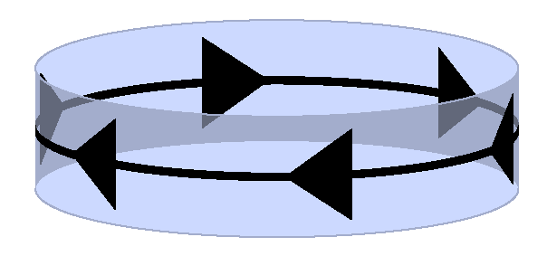
生成元：显然 σh\sigma_\text{h}σh 与 R(e3,2πn)R(e_3, \frac{2\pi}{n})R(e3,n2π) 乘法交换，相互独立，共同作为 CnhC_{n\text{h}}Cnh 生成元。
Cnv=Cn∪Cnσv≃Dn .C_{n \text{v}} = C_n \cup C_n \sigma_\text{v} \simeq D_n \ . Cnv=Cn∪Cnσv≃Dn .
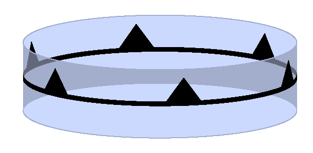
DnD_nDn：二面体群的一种写法是 Dn={e=r0,r,r2,⋯ ,rn−1,r0π0,⋯ ,rn−1π0}=Zn∪Znπ0 .D_n = \{e = r^0, r, r^2, \cdots, r^{n - 1}, r^0\pi_0, \cdots, r^{n - 1}\pi_0\} = \mathbb{Z}_n \cup \mathbb{Z}_n \pi_0\ .Dn={e=r0,r,r2,⋯,rn−1,r0π0,⋯,rn−1π0}=Zn∪Znπ0 .其中 (rπ0)2=e(r \pi_0)^2 = e(rπ0)2=e, rn=er^n = ern=e, π02=e\pi_0^2 = eπ02=e，rπ0≠π0rr\pi_0 \ne \pi_0 rrπ0=π0r。
DnD_nDn：二面体群的一种写法是
Dn={e=r0,r,r2,⋯ ,rn−1,r0π0,⋯ ,rn−1π0}=Zn∪Znπ0 .D_n = \{e = r^0, r, r^2, \cdots, r^{n - 1}, r^0\pi_0, \cdots, r^{n - 1}\pi_0\} = \mathbb{Z}_n \cup \mathbb{Z}_n \pi_0\ .Dn={e=r0,r,r2,⋯,rn−1,r0π0,⋯,rn−1π0}=Zn∪Znπ0 .
其中 (rπ0)2=e(r \pi_0)^2 = e(rπ0)2=e, rn=er^n = ern=e, π02=e\pi_0^2 = eπ02=e，rπ0≠π0rr\pi_0 \ne \pi_0 rrπ0=π0r。
O(3)O(3)O(3) 中的两种 DnD_nDn：二面体群 DnD_nDn 在 O(3)O(3)O(3) 中以 两种面貌 出现：作为 SO(3)SO(3)SO(3) 的子群 (第一类点群)，或者不是 SO(3)SO(3)SO(3) 子群 (第二类点群)。核心区别在于 DnD_nDn 中的 平面内 镜面反射操作在 R3\mathbb{R}^3R3 中的实现方式： 翻面 (一种旋转)：所得到的群为 Dn⊂SO(3)D_n \subset SO(3)Dn⊂SO(3) 镜面反射：所得到的群为 Cnv⊂O(3)C_{n \text{v}} \subset O(3)Cnv⊂O(3)，Cnv⊄SO(3)C_{n \text{v}} \not \subset SO(3)Cnv⊂SO(3)
O(3)O(3)O(3) 中的两种 DnD_nDn：二面体群 DnD_nDn 在 O(3)O(3)O(3) 中以 两种面貌 出现：作为 SO(3)SO(3)SO(3) 的子群 (第一类点群)，或者不是 SO(3)SO(3)SO(3) 子群 (第二类点群)。核心区别在于 DnD_nDn 中的 平面内 镜面反射操作在 R3\mathbb{R}^3R3 中的实现方式：
生成元：CnvC_{n \text{v}}Cnv 的生成元是 R(e3,2πn)R(e_3, \frac{2\pi}{n})R(e3,n2π) 与 σv\sigma_\text{v}σv。
O(3)O(3)O(3) 中的两种 DnD_nDn：SO(3)SO(3)SO(3) 中的 DnD_nDn 也可以写成 Dn={R(2πnk) ∣ k=0,1,…,n−1}∪{R(2πnk)σhσv ∣ k=0,1,…,n−1}=Cn∪Cnσhσv .D_n = \{R(\frac{2\pi}{n}k) \ | \ k = 0, 1, \ldots, n - 1 \} \\ \cup \{ R(\frac{2\pi}{n}k)\sigma_\text{h}\sigma_\text{v} \ | \ k = 0, 1, \ldots, n - 1 \} = C_n \cup C_n \sigma_\text{h}\sigma_\text{v} \ .Dn={R(n2πk) ∣ k=0,1,…,n−1}∪{R(n2πk)σhσv ∣ k=0,1,…,n−1}=Cn∪Cnσhσv .这个群的生成元为 R(2πn)R(\frac{2\pi}{n})R(n2π) 与 σhσv\sigma_\text{h} \sigma_\text{v}σhσv。注意 σhσv\sigma_\text{h}\sigma_\text{v}σhσv 是一个 转动 操作。
O(3)O(3)O(3) 中的两种 DnD_nDn：SO(3)SO(3)SO(3) 中的 DnD_nDn 也可以写成
Dn={R(2πnk) ∣ k=0,1,…,n−1}∪{R(2πnk)σhσv ∣ k=0,1,…,n−1}=Cn∪Cnσhσv .D_n = \{R(\frac{2\pi}{n}k) \ | \ k = 0, 1, \ldots, n - 1 \} \\ \cup \{ R(\frac{2\pi}{n}k)\sigma_\text{h}\sigma_\text{v} \ | \ k = 0, 1, \ldots, n - 1 \} = C_n \cup C_n \sigma_\text{h}\sigma_\text{v} \ .Dn={R(n2πk) ∣ k=0,1,…,n−1}∪{R(n2πk)σhσv ∣ k=0,1,…,n−1}=Cn∪Cnσhσv .
这个群的生成元为 R(2πn)R(\frac{2\pi}{n})R(n2π) 与 σhσv\sigma_\text{h} \sigma_\text{v}σhσv。注意 σhσv\sigma_\text{h}\sigma_\text{v}σhσv 是一个 转动 操作。
注：显示二面体群在三维空间中的两种实现方式的几何图示，展示平面反射与翻面操作的区别
S2n≔{R(2πnk) ∣ k=0,…,n−1}∪{R(2π2nk)σh ∣ k=1,3…,2n−1}S_{2n} \coloneqq \{R(\frac{2\pi}{n}k) \ | \ k =0, \ldots, n - 1\}\\ \cup \{R(\frac{2\pi}{2n}k) \sigma_\text{h}\ | \ k =1, 3\ldots, 2n - 1\}S2n:={R(n2πk) ∣ k=0,…,n−1}∪{R(2n2πk)σh ∣ k=1,3…,2n−1}
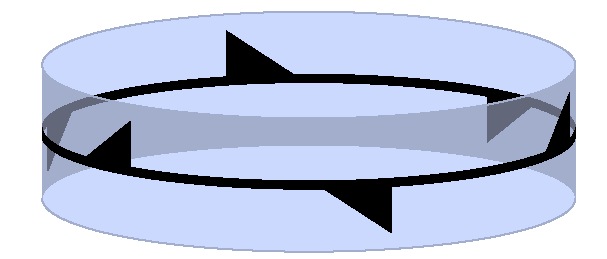
生成元：群中最小的转动反射操作为 R(2π2n)σhR(\frac{2\pi}{2n}) \sigma_\text{h}R(2n2π)σh。其偶次幂给出 R(2πnk)R(\frac{2\pi}{n}k)R(n2πk) 部分，奇数次幂给出 R(2π2nk)σhR(\frac{2\pi}{2n}k)\sigma_\text{h}R(2n2πk)σh。因此，R(2π2n)σhR(\frac{2\pi}{2n}) \sigma_\text{h}R(2n2π)σh 是 生成元。
Dnh=Cnv∪Cnvσh=Cn∪Cnσh∪Cnσv∪Cnσvσh .D_{n \text{h}} = C_{n \text{v}} \cup C_{n \text{v}} \sigma_\text{h} = C_n \cup C_n \sigma_\text{h} \cup C_n \sigma_\text{v} \cup C_n \sigma_\text{v}\sigma_\text{h} \ .Dnh=Cnv∪Cnvσh=Cn∪Cnσh∪Cnσv∪Cnσvσh .
Dnd≔{R(2πn)k ∣ k=0,…,n−1}∪{R(2π2nk)σhσv ∣ k=1,3,…,2n−1} .D_{n \text{d}} \coloneqq \{R(\frac{2\pi}{n}) k \ | \ k = 0, \ldots, n - 1\} \\ \cup \{R(\frac{2\pi}{2n}k) \sigma_\text{h}\sigma_\text{v} \ | \ k = 1, 3, \ldots, 2n - 1 \} \ .Dnd:={R(n2π)k ∣ k=0,…,n−1}∪{R(2n2πk)σhσv ∣ k=1,3,…,2n−1} .
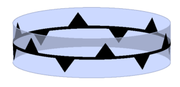
注：显示立方体的几何结构图，展示正六面体的对称性
非法点群：C5C_5C5 是一个五阶循环群，是 SO(3)SO(3)SO(3) 的子群。但是，它包含 555-阶元素，因此，C5C_5C5 不可能是晶体学点群。
证明： 第一图：显示一维晶格点在水平线上的排列 第二图：显示转动角度 θ\thetaθ 后的晶格点配置与约束条件 棕色与橙色连线与紫色一线平行：间隔应当是该方向晶格常数 aaa 的整数倍
证明：
第一图：显示一维晶格点在水平线上的排列
第二图：显示转动角度 θ\thetaθ 后的晶格点配置与约束条件
棕色与橙色连线与紫色一线平行：间隔应当是该方向晶格常数 aaa 的整数倍
直接约束：转动对称性的 order nnn 只能是 1,2,3,4,61, 2, 3, 4, 61,2,3,4,6
证明
棕色与橙色连线与紫色一线平行：间隔应当是该方向晶格常数 aaa 的整数倍：ma=2acosθma = 2 a \cos \thetama=2acosθ，其中 m∈Zm \in \mathbb{Z}m∈Z，于是
θ=2π1, 2π2, 2π3, 2π4, 2π6 \theta = \frac{2\pi}{1}, \ \frac{2\pi}{2}, \ \frac{2\pi}{3}, \ \frac{2\pi}{4}, \ \frac{2\pi}{6} θ=12π, 22π, 32π, 42π, 62π
高次轴：注意 DndD_{n\text{d}}Dnd 与 S2nS_{2n}S2n 的最小「转动角度」是 2π2n\frac{2\pi}{2n}2n2π。比如，D4dD_{4\text{d}}D4d 中的基本元素为转动反射 R(2π8)σhR(\frac{2\pi}{8}) \sigma_\text{h} R(82π)σh其中，σh\sigma_\text{h}σh 对紫棕橙原子所在的平面的原子 没有效果，因此上述转动反射的角度 2π/82\pi/82π/8 不可能保持平面内的晶格结构。因此，当 n>3n > 3n>3，DndD_{n \text{d}}Dnd 和 S2nS_{2n}S2n 不属于 晶体学点群
高次轴：注意 DndD_{n\text{d}}Dnd 与 S2nS_{2n}S2n 的最小「转动角度」是 2π2n\frac{2\pi}{2n}2n2π。比如，D4dD_{4\text{d}}D4d 中的基本元素为转动反射
R(2π8)σhR(\frac{2\pi}{8}) \sigma_\text{h} R(82π)σh
其中，σh\sigma_\text{h}σh 对紫棕橙原子所在的平面的原子 没有效果，因此上述转动反射的角度 2π/82\pi/82π/8 不可能保持平面内的晶格结构。因此，当 n>3n > 3n>3，DndD_{n \text{d}}Dnd 和 S2nS_{2n}S2n 不属于 晶体学点群
S/T=O .S/T = O \ . S/T=O .